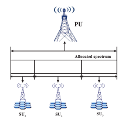

| Crowdsourcing Sensing Workloads of Heterogeneous Tasks: A Distributed Fairness-Aware Approach Wei Sun, Yanmin Zhu, Lionel M. Ni, Bo Li IEEE Proceedings of ICPP, September 2015 |
 | An efficient distributed algorithm for spectrum allocation in multi-hop cognitive radio networks Wei Sun, Yanmin Zhu 2015 IEEE 23rd International Symposium on Quality of Service (IWQoS), Poster |
|  | A distributed spectrum sharing algorithm in cognitive radio networks Wei Sun, Jiadi Yu, Tong Liu IEEE Proceedings of ICPADS, December 2014 |
 | Distributed Spectrum Sharing in Cognitive Radio Networks: A Pricing-Based Decomposition Approach Yanmin Zhu, Wei Sun , Jiadi Yu, Tong Liu , Bo Li International Journal of Distributed Sensor Netowrks, December, 2014 |